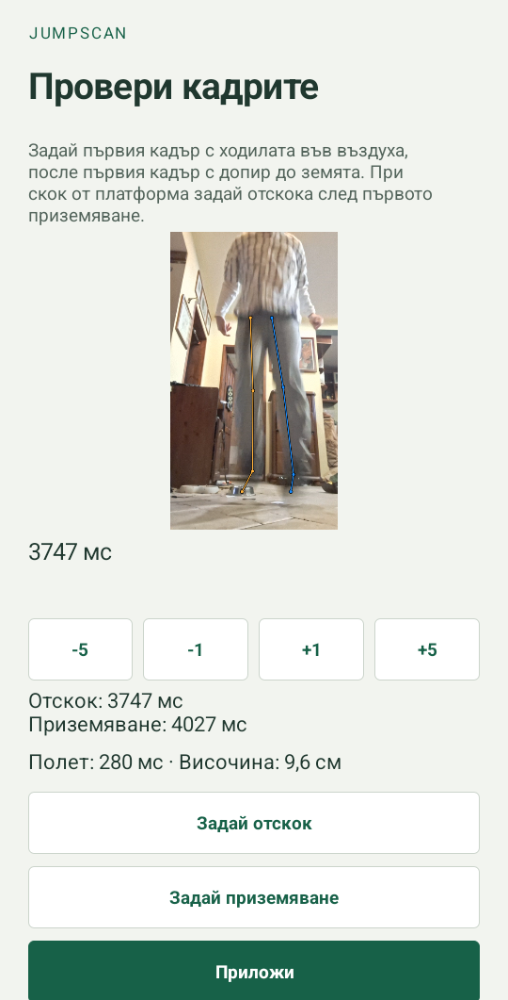

Защо
Без апаратура. Един телефон и клип от 10 секунди стигат за числата.
История, не един кадър. Всеки резултат остава в клуба, за да се вижда промяната спрямо базовата стойност на спортиста.
Видеото остава на телефона. Към сървъра тръгват само числа, без видео.
Как работи
- Заснеми. Телефонът е на височината на коленете, спортистът е целият в кадъра, заснема се отпред.
- Анализирай. На самия телефон приложението намира позата и смята ъглите, времето на полет и височината на отскока.
- Изпрати. Числата отиват в клубния сървър, а треньорът ги вижда в историята и на графика.
Какво показва
Сгъване на коляното при контакт и пиково · ъгъл в челната равнина · отношение колене/глезени · асиметрия · време на полет · височина на отскока.
Платформа за клуба
Групи · тестови сесии с календар (.ics) и доклад на трите опита · ежедневно самочувствие и натоварване · бележки от треньора · тренировъчни планове · хранене с адаптивни цели · проверка на техниката · AI помощник, който предлага, не предписва · обновяване на живо.

Проверка на кадрите на телефона
За кого
Клубове по волейбол, баскетбол, лека атлетика и всички, които искат да следят приземяването с телефоните, с които вече разполагат.